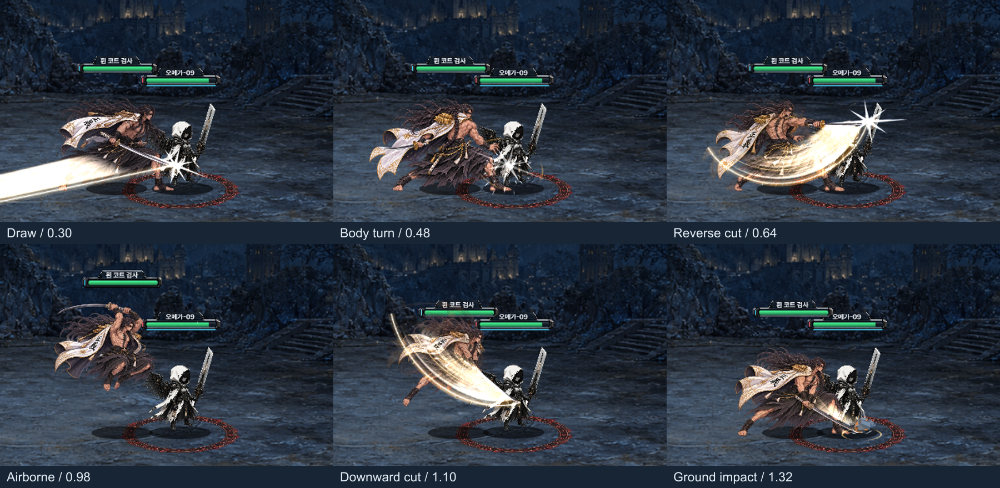
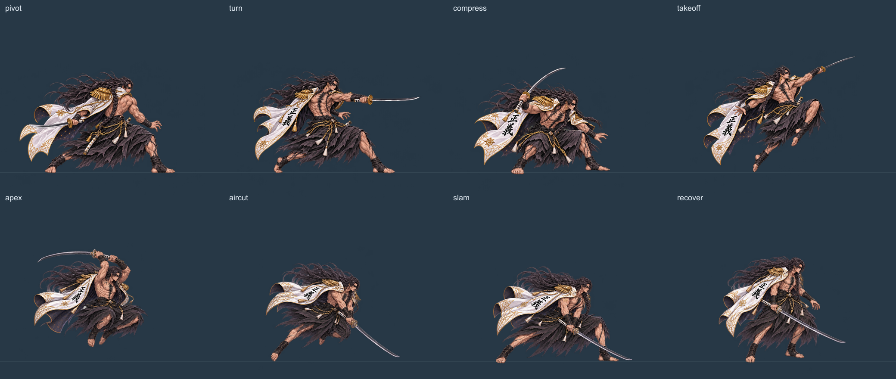

V3.5 · 2026.11.02 액션 확장
발도 → 회전 베기 → 공중 내려베기
낮게 파고드는 발도에서 몸을 틀어 다시 베고, 도약 후 내려찍습니다. 세 번의 검격에 짧은 멈춤과 자세 잔상, 착지 충격파를 연결했습니다.
회전·도약 연격 · 효과 ON
몸동작 비교 · 효과 OFF
정상 전투 속도로 연격을 3회씩 재생했습니다. 전장에서는 회전·도약 연격 버튼으로 직접 실행할 수 있습니다.
이전 기본 공격·발도 영상 · 새 액션 제작 기록
자세와 검격이 바뀌는 여섯 순간

새 작화와 Spine 원본
새 자세 8개를 추가한 로컬 검토용 리소스입니다.
Spine 편집 원본 다운로드